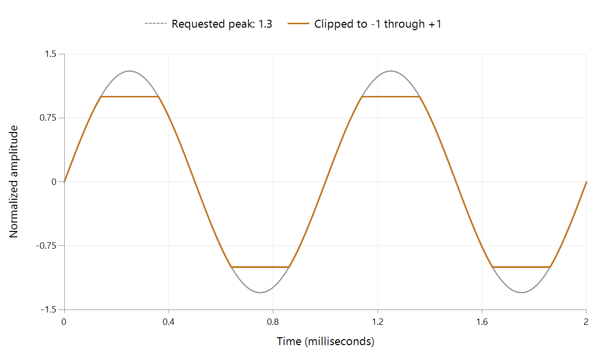

Audio Clipping
The dotted waveform asks for a peak of 1.3. The solid waveform reaches the available limit, +1, and stays there until the requested signal returns within range. That flat top is hard clipping.

Calculated illustration: a 1.3-peak sine limited to [−1,+1]. It shows a mathematical limiter, not measured Emby output.
A level change should multiply every sample by the same factor. Clipping stops doing that for the samples beyond the limit, so it changes the shape and creates distortion. Repeatedly reshaping a sine also introduces frequency components absent from the original sine.
Put the volume adjustment before the failure
Take an overloaded sample of +1.3 and a second sample of +0.6. Compare reducing gain by half before and after the clipping stage:
| Original value | Half gain, then clipping | Clipping, then half gain |
|---|---|---|
| +1.3 | +0.65 | +0.50 |
| +0.6 | +0.30 | +0.30 |
| −1.3 | −0.65 | −0.50 |
The first route keeps the waveform's proportions. The second makes an already altered waveform quieter. Once +1.3 has become +1, the output no longer distinguishes it from +1.1 or +1.8.
This explains why lowering a receiver's volume can leave distortion audible: the overloaded stage may have been the recording, a decoder-side boost, or an earlier mixer.
How a valid input becomes too large
Each channel in a soundtrack can fit its own range. Summing two simultaneous +0.8 values at full gain nevertheless requests +1.6. A downmix needs coefficients, output attenuation, or appropriate overload management to handle such combinations.
An equalizer boost can similarly raise part of a waveform. A float processor may retain +1.6 successfully as an intermediate value; a later integer output converter must either bring it within range or lose the excess. The allowed working number range and the final output's usable range are different boundaries.
Clipping can also occur in analog equipment when a circuit runs out of voltage or current capacity. Its overload shape need not match the flat limiter pictured here.
Samples below full scale can have larger reconstructed peaks
Sample peak measurement examines the stored or decoded values. A reconstructed waveform also exists between those sample positions.
An idealized example has two adjacent values of +0.8, with all other values zero. At their halfway point, ideal sinc interpolation gives:
0.8 × sinc(0.5) + 0.8 × sinc(−0.5) = 0.8 × 2/π + 0.8 × 2/π ≈ 1.0186.
The samples are below +1, but this mathematical reconstructed waveform exceeds it. Real reconstruction and true-peak measurement use practical filters; the example explains why checking only the largest sample can miss an output peak.
Locate the overloaded stage
If an Emby soundtrack distorts after a boost or downmix, compare the same passage with that operation removed. If the source itself contains clipped peaks, changing the delivery bitrate will not recover them.
A useful level trace records the input peak, processing gains, summed output, and final converter range. Reducing gain before the first overloaded boundary preserves the shape; reducing it later preserves the distortion at a lower listening level.